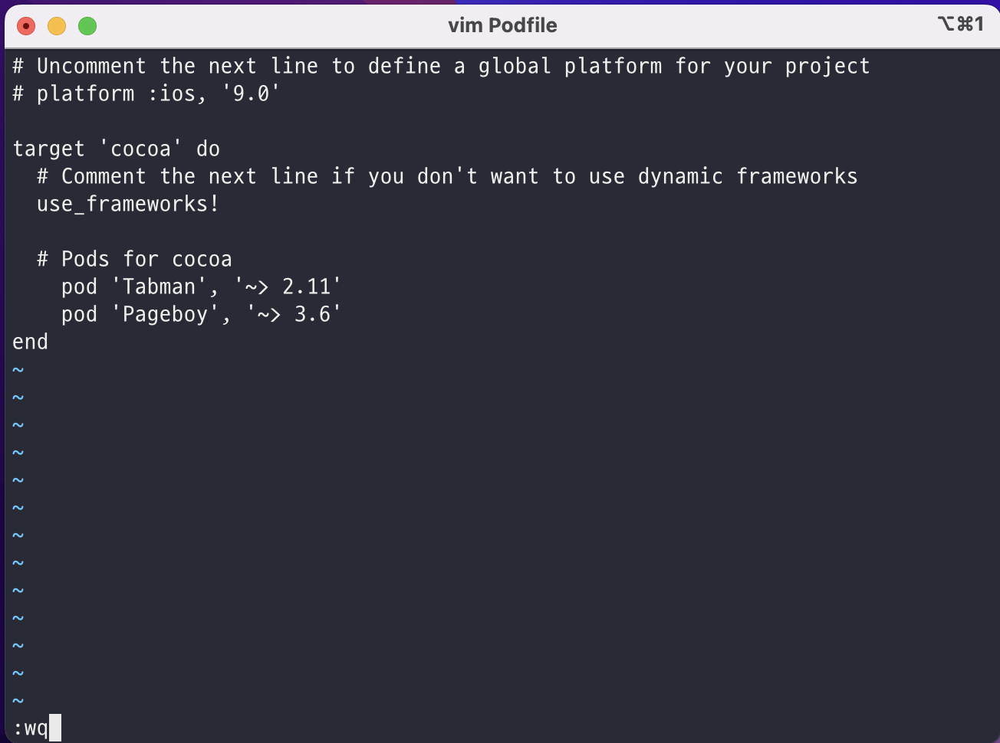

[iOS]Pod 설치 방법
설치 방법
코코아팟 설치
sudo gem install cocoapods
프로젝트 경로로 이동하기
프로젝트 경로로 이동하는 방법은 많다. 그중에 나는 Finder 를 이용하는 방법을 사용함.
Xcode 키고 → 원하는 project에서 오른쪽 마우스 클릭 or 터치패드 두 손가락으로 클릭 → show in Finder → 다시 Finder에서 원하는 project를 선택한 후 오른쪽 마우스 클릭/터치패드 클릭 → 폴더에서 새로운 터미널 열기 를 누르면 project 경로가 설정된 모습을 볼 수 있다.
pod 파일 생성해주기
프로젝트 경로로 이동한 후에는 프로젝트 안에 pod 파일을 생성해 줘야 한다. 이 파일로 Xcode 외부 라이브러리를 install 하여 사용할 수 있다.
pod init
주의할 점
pod파일 열기
pod 파일을 수정해 외부 라이브러리를 install 하는 것이기 때문에 텍스트 편집기를 사용해야 한다. 내가 주로 이용하는 것은 vim 이지만 기본 텍스트 편집기를 사용하는 것도 편하다. 또한, vscode에서 텍스트 편집도 가능하다는 점.
vim podfile
open -e podfile
pod 파일 수정
파일 수정은 각 라이브러리마다 다르기 때문에 tabman 을 예로 들어보자 . Podfile의 특정 위치에 설치하고 싶은 라이브러리를 적어주면 된다.
pod 'Tabman', '~> 2.11'
pod 'Pageboy', '~> 3.6'

주의할 점
pod 파일 설치
pod install
arch -x86_64 pod install
주의할 점
설치 과정에서 오류 발생
Loaderror 발생할 경우에 다음과 같이 하면 된다.
sudo arch -x86_64 gem install ffi
(터미널 키자마자)
arch -x86_64 pod install
(원하는 경로로 이동하여)